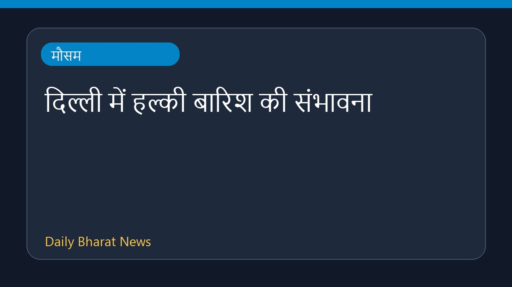

दिल्ली में हल्की बारिश की संभावना

भारत मौसम विज्ञान विभाग (IMD) ने राष्ट्रीय राजधानी दिल्ली में हल्की बारिश होने का अनुमान जताया है। द न्यू इंडियन एक्सप्रेस की रिपोर्ट के अनुसार, मौसम विभाग के इस पूर्वानुमान से क्षेत्र के मौसम में बदलाव आ सकता है। हालांकि इस संबंध में विस्तृत जानकारी अभी सीमित है।
मूल स्रोत: Weather News Sources
IMD forecasts light showers in Delhi - The New Indian Express ↗
IMD forecasts light showers in Delhi - The New Indian Express ↗